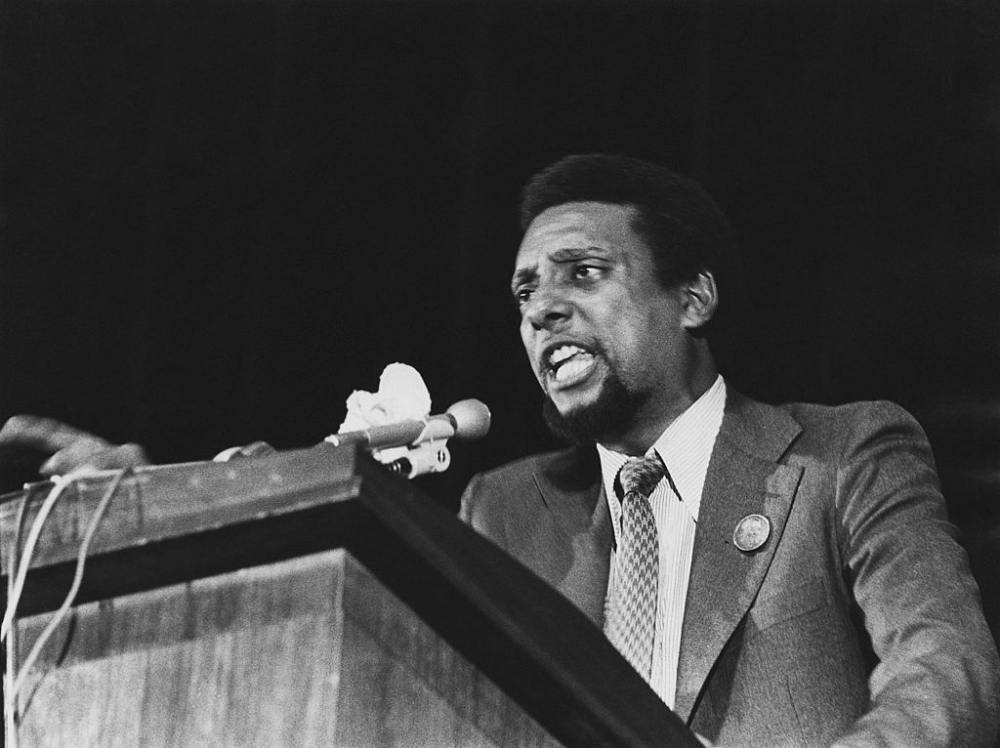
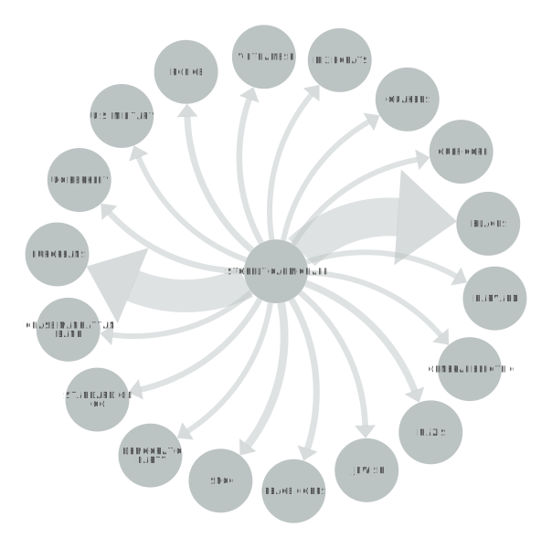

STOKELY CARMICHAEL
Stokely Carmichael, also known as Kwame Ture, was a prominent civil rights activist and leader in the United States during the 1960s. Born in Trinidad and Tobago in 1941, Carmichael moved to the United States as a child and became involved in the Civil Rights Movement while attending Howard University. He rose to prominence as a leader of the Student Nonviolent Coordinating Committee (SNCC) and played a key role in the organization's voter registration and desegregation campaigns in the South. Carmichael's philosophy of Black Power, which emphasized self-determination and empowerment for Black communities, was a significant influence on the Black Panther Party and other Black nationalist movements. He continued to advocate for social justice and human rights throughout his life, speaking out against racism, imperialism, and oppression both in the United States and internationally.
POSITIVE OR NEGATIVE RHETORICAL ACTION
Out of the three analyzed nonviolent speakers, Stokely Carmichael and his analyzed Black Power speech has by far the most mentions of active resistance and self-defense, atop the nonviolence. Carmichael was similar to Malcolm X in that he felt that Black Americans should no longer have sat around and waited for rights to be given to them. The only way him and his community would achieve equality was by going out and getting it for themselves. This philosophy was termed by Carmichael as Black Power, and it explains why his speech had the amount of self-defense and direct action mentions as it did.
"BLACK POWER"
In "Black Power," Stokely Carmichael, later known as Kwame Ture, argued that the Civil Rights Movement had reached a point where simply fighting for integration was not enough. He believed that Black people needed to take control of their own communities and work towards building their own power and resources. He declared that "Black Power" meant the ability of Black people to determine their own destiny and to achieve freedom and justice on their own terms. Carmichael emphasized that Black Power did not mean the exclusion or oppression of other races, but rather the empowerment of Black people to stand up for themselves and their communities.
NETWORK GRAPH
Carmichael's idea of Black Power included the empowering of Black people by uplifting themselves in the oppressive society that white people had created. This explains the heavy mentions of Europeans and Blacks. Many of the speakers refer to white people in different ways, such as Carmichael who refers to the white man as the European man.